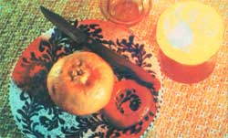

Family holiday traditions are a joy to share. And one of my personal favorites - which has always delighted our children and their friends - is my clan's Christmas practice of turning tangerines into colorful little lamps.
This particular tradition was established in our family shortly after the turn of the century, when my grandfather was helping to build Greece's railroads. As he told it, the people in the village tavern would - as evening came on - eat the tangy-sweet fruit and transform the leftover skins into small lanterns. By the time full darkness fell, the establishment would be all aglow . . . with the light from dozens of tiny shining globes.
Though Grandpa soon left Greece, the festive practice stayed with him and became part of our family's holiday customs. I've passed the "craft" on to my children, who adore making miniature "fruit lights" on Christmas Eve . . . or during any other cozy, holiday-season evening.
Our small Christmas creations require nothing more special than a little oil (preferably olive . . . though any salad oil will do), some matches, some tangerines, and glasses to set them on. Better yet, when you make a "citrus candle", you get to eat the tasty part of your craft material ... and - should you want a second little lamp - you get to eat another fruit . . . and so on.
To fashion your own holiday lantern, set a tangerine stem side up and gently slice through the skin - all the way around the orange "ball" - at a point just above its midline. This shallow cut should divide the bottom and top of the skin, but leave the fruit intact. Carefully now, remove the top (or stem) half of the peel in one piece. Then - again being sure not to tear the tangerine's covering - loosen one tasty wedge from the bottom and work it out. After the first fruit section is free, you'll find it an easy matter to remove the rest of the slices. However, be sure to leave - attached to the skin - at least part of the stringy, pithy "vein" that grows up through the center of the fruit.
When you've removed all the sections, twist the pith to form a wick, then pour in a little oil and rub it all over the inside of the skin (that way - when the wick is lit - the globe will be evenly translucent). If there's not enough oil left after this step to form a very shallow puddle in the bottom of the citrus skin, add a little more. Now light your lamp. It'll probably take several attempts before the heat from the burning match dries the wick enough for the flame to take hold and burn cheerily.
Once that happens, oil the inside of the top half of the skin . . . cut an air hole in it about an inch in diameter . . . put the "lid" on the lamp . . . put the lamp on its glass . . . and it's ready to burn for quite a spell. To keep the little light shining, add more oil - just half a teaspoonful - from time to time . . . and enlarge the hole in the top if its edges start to char.
After you've made a few of these luminous Lilliputian lanterns, you'll be able to turn them out at a moment's notice . . . to brighten up your holidays with the fruity fragrance and soft, warm, mellow glow of tiny tangerine candles.
|
 |
|
|